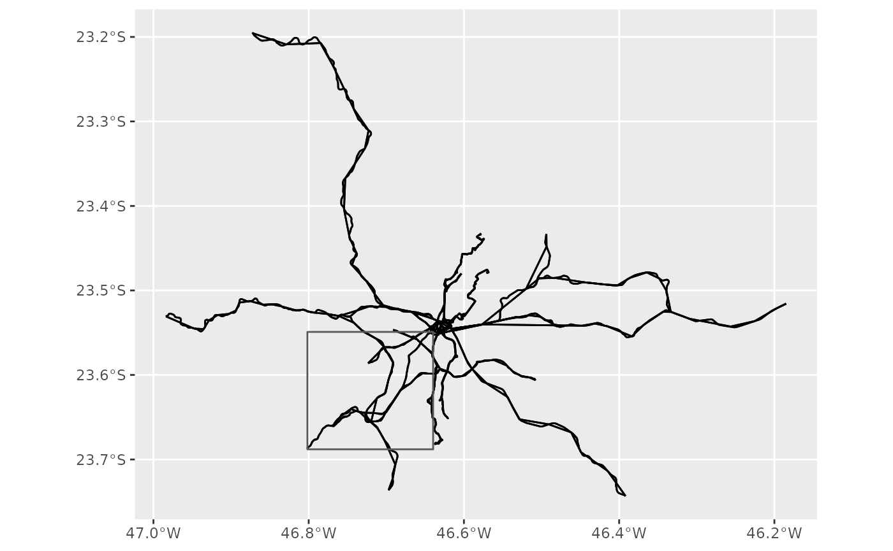
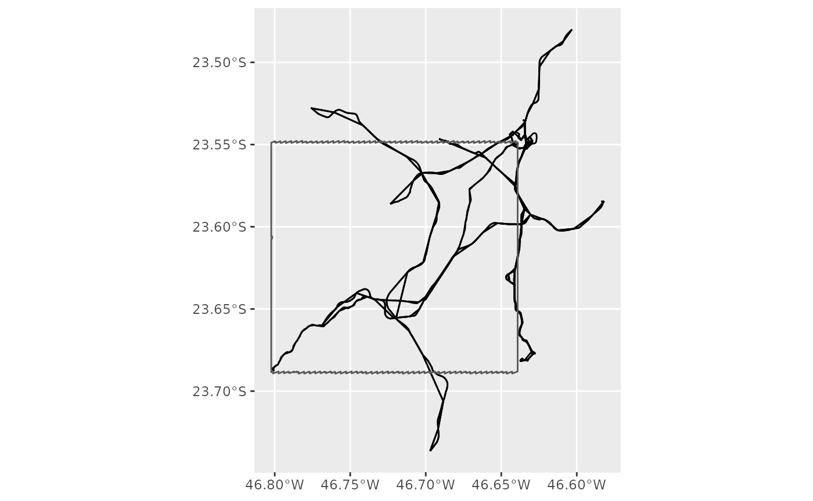

GTFS feeds are oftenly used to describe very large and complex public transport networks. These large files can become quite cumbersome to use, manipulate and move around, and it’s not unfrequent that one wants to analyse a specific subset of the data.
gtfstools includes a few functions to filter GTFS feeds, thus allowing for faster and more convenient data processing. This vignette will introduce you to these functions and will cover their usage in detail.
We will start by loading the packages required by this demonstration into the current R session:
gtfstools includes the following filtering functions:
filter_by_trip_id()filter_by_route_id()filter_by_shape_id()filter_by_stop_id()filter_by_route_type()filter_by_sf()
The first five work in a very similar fashion. You specify a vector of identifiers, and the function keeps (or drops, as we’ll see soon) all the entries that are in any way related to this id. Let’s see how that works using filter_by_trip_id():
path <- system.file("extdata/spo_gtfs.zip", package = "gtfstools")
gtfs <- read_gtfs(path)
utils::object.size(gtfs)
#> 811304 bytes
head(gtfs$trips[, .(trip_id, trip_headsign, shape_id)])
#> trip_id trip_headsign shape_id
#> 1: CPTM L07-0 JUNDIAI 17846
#> 2: CPTM L07-1 LUZ 17847
#> 3: CPTM L08-0 AMADOR BUENO 17848
#> 4: CPTM L08-1 JULIO PRESTES 17849
#> 5: CPTM L09-0 GRAJAU 17850
#> 6: CPTM L09-1 OSASCO 17851
# keeping trips CPTM L07-0 and CPTM L07-1
smaller_gtfs <- filter_by_trip_id(gtfs, c("CPTM L07-0", "CPTM L07-1"))
utils::object.size(smaller_gtfs)
#> 71592 bytes
head(smaller_gtfs$trips[, .(trip_id, trip_headsign, shape_id)])
#> trip_id trip_headsign shape_id
#> 1: CPTM L07-0 JUNDIAI 17846
#> 2: CPTM L07-1 LUZ 17847
unique(smaller_gtfs$shapes$shape_id)
#> [1] "17846" "17847"We can see from the code snippet above that the function not only filters the trips table, but all other tables that contain a key that can be identified via its relation to trip_id. For example, since the trips CPTM L07-0 and CPTM L07-1 are described by the shapes 17846 and 17847, respectively, these are the only shapes kept in smaller_gtfs.
The function also supports the opposite behaviour: instead of keeping the entries related to the specified identifiers, you can drop them. To do that, set the keep argument to FALSE:
# dropping trips CPTM L07-0 and CPTM L07-1
smaller_gtfs <- filter_by_trip_id(
gtfs,
c("CPTM L07-0", "CPTM L07-1"),
keep = FALSE
)
utils::object.size(smaller_gtfs)
#> 762576 bytes
head(smaller_gtfs$trips[, .(trip_id, trip_headsign, shape_id)])
#> trip_id trip_headsign shape_id
#> 1: CPTM L08-0 AMADOR BUENO 17848
#> 2: CPTM L08-1 JULIO PRESTES 17849
#> 3: CPTM L09-0 GRAJAU 17850
#> 4: CPTM L09-1 OSASCO 17851
#> 5: CPTM L10-0 RIO GRANDE DA SERRA 17852
#> 6: CPTM L10-1 BRÁS 17853
head(unique(smaller_gtfs$shapes$shape_id))
#> [1] "17848" "17849" "17850" "17851" "17852" "17853"And the specified trips (and their respective shapes as well) are nowhere to be seen. Keep an eye that, since we are keeping many more entries in the second case, the resulting GTFS object, though smaller than the original, is much larger than in the first case.
The rest of the filtering functions all work very similarly, with the exception of one. filter_by_sf() takes a spatial sf/sfc object (or its bounding box) and keeps/drops the entries related to shapes and trips selected via a specified spatial operation. It may sound a bit complicated, but it’s fairly easy to understand when shown. Let’s create an auxiliary function to save us some typing:
plotter <- function(gtfs,
geom,
spatial_operation = sf::st_intersects,
keep = TRUE,
do_filter = TRUE) {
if (do_filter) {
gtfs <- filter_by_sf(gtfs, geom, spatial_operation, keep)
}
shapes <- convert_shapes_to_sf(gtfs)
trips <- get_trip_geometry(gtfs, file = "stop_times")
geom <- sf::st_as_sfc(geom)
ggplot() +
geom_sf(data = trips) +
geom_sf(data = shapes) +
geom_sf(data = geom, fill = NA)
}This function:
- Conditionally filters a GTFS object given a spatial object (called
geom); - Generates shapes’ and trips’ geometries as described in their respective tables;
- Generates a polygon from the bounding box;
- Plots all the
sfobjects cited above to show the effect of eachfilter_by_sf()argument in the final result.
Also, please note that our plotter() function takes the same arguments of filter_by_sf() (with the exception of do_filter, which is used to show the unfiltered data), as well as the same defaults.
Let’s say that we want to filter GTFS data using the bounding box of the shape 68962. Here’s how the unfiltered data looks like, with the bounding box placed on top of it.
bbox <- sf::st_bbox(convert_shapes_to_sf(gtfs, shape_id = "68962"))
plotter(gtfs, bbox, do_filter = FALSE)
By default filter_by_sf() (and plotter(), consequently) keeps all the data related to the trips and shapes that intersect the given geometry. Here’s how it looks like:
plotter(gtfs, bbox)
Alternatively you can also drop such data:
plotter(gtfs, bbox, keep = FALSE)You can also control which spatial operation you want to use to filter the data. This is how you’d keep the data that is contained inside the given geometry:
plotter(gtfs, bbox, spatial_operation = sf::st_contains)
And, simultaneously using spatial_operation and keep, this is how you’d drop the data contained inside the geometry:
plotter(gtfs, bbox, spatial_operation = sf::st_contains, keep = FALSE)
All filtering functions return a GTFS object readily available to be manipulated and analysed using the rest of gtfstools’ toolkit. For more information on how to use other functions made available by the package, please see the introductory vignette.